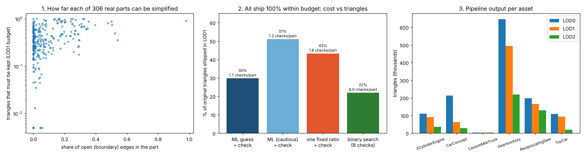

3D pipeline for XR: raw models in, ready-to-use detail levels out
Automatic cleanup, unit fixing and ML-driven simplification. Built for Metadome.ai's 3D Automation Pipeline and XR project.
4.8x fewerchecks than step-by-step search, on models the ML never saw
31% lighterfiles than one fixed ratio for every part
3.5x fasteron a full 115-part engine
28 modelsreal CAD and artist assets, 306 parts
Try it: one car, three levels of detail
Output of the pipeline for a 109-part concept car (geometry only; materials are not carried over yet). Each part of each level was checked: its surface stays within 0.2% (LOD1) or 1% (LOD2) of the part's size. Drag to rotate.
Results

Built by Pavitra Seth (BITS Pilani). Public data used as a stand-in; not affiliated with the company. Code and method: see the repository README.